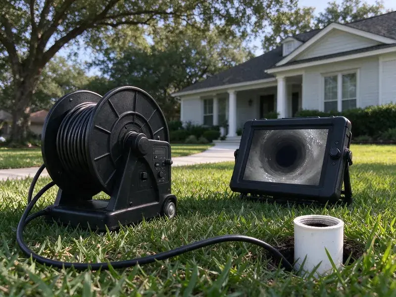
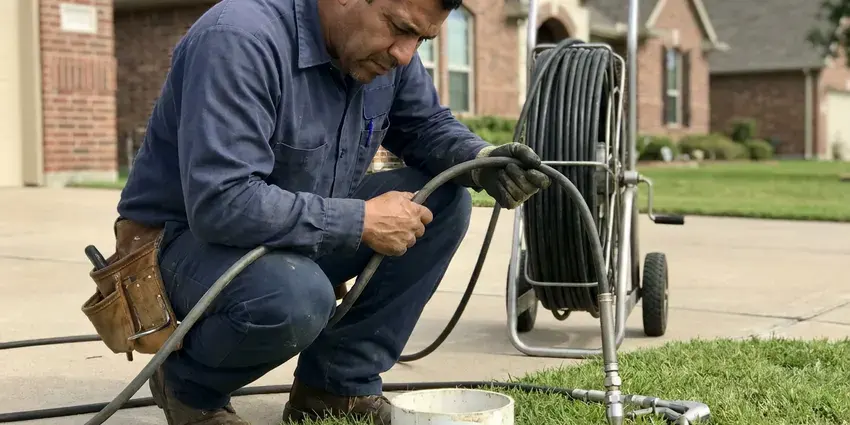

Sewer Line Cleaning in Sterling, AK
Dealing with a backed-up sewer line in Sterling, AK? CKN Plumbing provides fast, effective sewer line cleaning to restore proper flow.
- Prompt Service
- Recorded Camera Inspections
- Lateral Cleaning to Street
- Skilled Technicians

Get Your Sewer Lines Cleaned Properly in Sterling, AK.
Contact us now to schedule service and see the CKN Plumbing difference.
Expert Sewer Line Cleaning Services in Sterling, AK
CKN Plumbing understands the frustration and potential damage a clogged sewer line can cause for homeowners in Sterling. Our sewer line cleaning is designed to promptly identify and eliminate obstructions, from tree roots to grease buildup, using professional equipment.
Our expertise includes:
- High-pressure hydro jetting to clear tough clogs.
- Maintenance scheduling for root-prone and grease-heavy lines
- Preventative maintenance programs for lasting flow.

Additional Drain Services Services in Sterling, AK
From stubborn kitchen clogs to main sewer backups, our drain services in Sterling, AK clear the line and keep it clear with camera-verified results.



Hydro Jetting service for Sterling homeowners


Customers
Why Choose CKN Plumbing for Sewer Line Cleaning in Sterling, AK?
Your sewer line is out of sight until it fails. Regular cleaning keeps roots, grease and scale from building to a complete blockage.
- Local Expertise, We understand the plumbing challenges in Sterling, including soil conditions and local building codes that apply to sewer lines.
- Complete Lateral, We clean the whole line to the city connection, not just the nearest section.
- Clear Records, Every job includes notes on pipe type, depth and condition for your files.
Citywide Coverage
From downtown to the farthest suburbs, CKN Plumbing provides complete sewer line cleaning throughout Sterling. Our wide coverage means we can deliver timely and efficient solutions right to your doorstep, minimizing disruption to your routine.
Experienced Team
Our team of plumbers has broad experience with sewer line cleaning, handling everything from routine maintenance to severe blockages caused by local soil and tree root systems. They are continually trained on current methods and equipment to provide the best service possible.
Safety-First Approach
Safety and compliance to local plumbing codes are top priorities in all our sewer line cleaning work. Every job in Sterling, AK is completed safely, protecting your property and our team, and maintaining compliance with all municipal regulations.
Trusted Certified Sterling Plumbing Services Professionals
At CKN Plumbing, we take pride in providing licensed, certified plumbing services throughout Sterling, AK. Backed by leading industry credentials, our experienced plumbers combine technical skill with genuine customer care. Whether it is repair, installation, or maintenance, we follow strict safety and quality standards to deliver long-lasting results you can trust.
Call Us Now PHCC Plumbing Contractor Recognition
PHCC Plumbing Contractor Recognition Better Business Bureau (BBB) Accreditation
Better Business Bureau (BBB) Accreditation Angi Certified Pro
Angi Certified Pro ISO 9001 Quality Management Certification
ISO 9001 Quality Management CertificationEffective Sewer Line Cleaning Services in Sterling, AK
Root-Infested Sewer Line Cleaning in Sterling, AK
Roots are the top cause of sewer line blockages in established neighborhoods. They enter at clay joints and small cracks, then grow into a dense mat that catches waste. We cut them out with root saws and finish with jetting to remove the fine hairs. The camera then shows each entry point. You can choose ongoing cleaning or a lasting fix such as lining.

Sewer Camera Inspection in Sterling, AK
Before any cleaning, CKN Plumbing often recommends a sewer camera inspection. This involves inserting a high-resolution waterproof camera into your sewer line, letting us see the exact condition of your pipes. We can identify cracks, breaks, corrosion, root intrusion, and the precise location and nature of any blockage in Sterling, AK. This diagnostic step helps us choose the most appropriate and cost-effective cleaning or repair method, avoiding unnecessary digging or guesswork.
Identifying Signs of Sewer Line Clogs in Sterling, AK
Knowing the signs of a potential sewer line clog can help you act quickly. Watch for multiple drains backing up at once, gurgling noises from toilets or drains, a sewage smell in your yard or basement, or water coming up through a drain when you flush a toilet in Sterling, AK. If you notice any of these symptoms, it is time to call CKN Plumbing for a professional sewer line inspection and cleaning.
Commercial Sewer Line Cleaning in Sterling, AK
Businesses in Sterling, AK have distinct sewer line cleaning needs, often dealing with higher volumes of waste and commercial-grade blockages. Restaurants, for example, often contend with severe grease buildup. CKN Plumbing provides robust commercial sewer line cleaning designed to minimize downtime and keep your business running without interruption. We use powerful equipment to handle large-scale blockages and maintain your commercial plumbing effectively.
Hydro Jetting for Sewer Lines in Sterling, AK
Hydro jetting is a highly effective method for sewer line cleaning, using high-pressure water streams to wash out stubborn clogs, grease, scale buildup, and even tree roots. This technique is particularly useful for thoroughly cleaning pipes without causing damage, making it suitable for a wide range of materials from PVC to older clay pipes found in Sterling, AK. It leaves your sewer lines nearly spotless, greatly reducing the chance of future blockages.
Emergency Sewer Line Cleaning in Sterling, AK
A sudden sewer backup can be a real mess, especially during a holiday or a busy week. CKN Plumbing offers emergency sewer line cleaning throughout Sterling, AK to address urgent blockages and overflows promptly. Our rapid response team is equipped to handle critical situations, minimizing water damage and restoring your plumbing system as quickly as possible. Do not hesitate to call us when disaster strikes.
Sewer Line Camera Inspection in Sterling
A camera inspection shows the inside of your sewer line in real time. We look for bellies where water pools, offset joints, cracks, roots and corrosion. A locator in the camera head lets us mark the exact spot and depth on the surface. You get a copy of the video and our notes. This is useful for home buyers, sellers and anyone with recurring clogs.

Tree Root Removal from Sewer Lines in Sterling
Shifting soil and mature trees can lead to serious problems, with tree roots seeking moisture and getting into sewer pipes, especially those with small cracks or loose joints. Frost heave is a major concern in Alaska, as freezing ground can lift and shift foundations, buried lines, and septic components. In Sterling, this is a common cause of recurring sewer backups. Our specialized root cutting tools and hydro jetting remove these invasive roots, restoring the full diameter of your sewer line. We can also offer tips on preventing future root intrusion.
Professional Sewer Line Cleaning Near Me in Sterling, AK
When you search for sewer line cleaning near me in Sterling, AK, you want a local company that gets your needs. CKN Plumbing is rooted in the community, providing reliable and prompt service to our neighbors. We pride ourselves on quick response times and effective solutions, so your plumbing system is back in order without delay.
Our team is always ready to head out to your location in Sterling, offering complete sewer line cleaning right where you need it. We are focused on being a trusted local plumbing partner, delivering quality workmanship and great customer service on every job.
CKN Plumbing at a Glance
- Licensed and insured plumbers serving Sterling, AK
- 24/7 emergency service with same-day scheduling
- Clear written estimates, no hidden fees
- 4.9-star rated by 309+ Alaska customers
Sterling Map
Sterling Information
- Population
- 5,918
- Area codes
- Local
- Service area
- Sterling and communities within 40 miles
- Nearby
- Kenai, Kalifornsky, Homer, Anchorage
For homes in Sterling, AK, sewer line cleaning is particularly important because older homes often have mature trees and pipe materials that roots can easily enter. Many homes here have boilers, circulation pumps, and expansion tanks, which call for a plumber familiar with hydronic systems.
Expert Services
Trust our professionals for reliable CKN Plumbing solutions in Sterling, AK.
Our Specialized Plumbing Services in Sterling, AK
At CKN Plumbing, we provide a complete range of plumbing services across Sterling, AK. From leak detection to full system installations, our team ensures fast, precise, and affordable service for both residential and commercial properties. Explore our core services below:


How Our Sewer Line Cleaning Process Works in Sterling, AK
At CKN Plumbing, we follow a reliable process for sewer line cleaning that delivers thoroughness and lasting results for our Sterling, AK customers.
Request a Quote
Contact CKN Plumbing at (928) 470-9007 to describe your sewer line issues. We gather the needed details and schedule a convenient time for an inspection or service.
Diagnostic Inspection
Our technicians perform a thorough assessment, often using a sewer camera to identify the exact cause and location of the blockage within your sewer line.
Professional Cleaning
Based on the diagnosis, we employ the most effective cleaning method, such as snaking or hydro jetting, to completely clear the blockage from your sewer pipes.
Frequently Asked Questions About Sewer Line Cleaning in Sterling
The cost of sewer line cleaning in Sterling can range from $250 to $800, depending on the severity of the clog, the length of the line, and the method used. More complex issues, like extensive tree root removal or hydro jetting, may be at the higher end. We provide upfront, transparent pricing after a thorough inspection.
We use professional equipment from trusted brands such as Spartan Tool, RIDGID, and Gorlitz for our sewer cameras, drain snakes, and hydro jetting machines. These brands are known for their reliability and effectiveness in tackling tough sewer line blockages.
The length of sewer line cleaning varies depending on the severity and accessibility of the blockage. A straightforward clog might take 1 to 2 hours, while more complex issues involving extensive root removal or multiple access points could take 3 to 4 hours or more. We will provide an expected timeline after our initial inspection.
No. Permits are only required for repairs, replacements or adding new cleanouts, and we handle those when needed.
Yes, CKN Plumbing stands behind our work. We offer a satisfaction guarantee on all our sewer line cleaning. Warranty details will be given at the time of service, for your peace of mind.
CKN Plumbing uses a range of professional-grade equipment, including powerful drain snakes and augers for smaller clogs, and hydro jetting machines for tougher blockages like grease buildup and tree roots. We also use sewer cameras for precise diagnosis before any work begins.
Root treatment products can slow regrowth after a mechanical cleaning, but they do not remove a root mass. Cleaning first is the key step.
Common causes include tree root intrusion, buildup of grease and food particles, flushing non-biodegradable items like wet wipes or feminine hygiene products, and structural issues like cracked or collapsed pipes. Older homes frequently have clay pipes that are prone to root invasion.
What People Are Saying About Our Plumbing Experts?

James P.
Our commercial plumbing system had a leak under the sink, and CKN Plumbing handled it professionally. The plumbers arrived quickly and restored everything without disruption to our customers.
Commercial Plumbing · Anchorage, AK
Sofia M.
Two new toilets installed in one visit, no mess left behind, and the tech even adjusted a faucet he noticed was dripping. Fair pricing and really friendly.
Toilet Installation · Homer, AK
Daniel K.
A pipe burst at 11 pm and they actually answered. The plumber showed up within the hour, shut everything down, and had us back to normal the next morning. Could not ask for more.
Emergency Plumbing · Wasilla, AKRobert G.
The trenchless sewer replacement saved our front yard. They walked us through the camera inspection footage first so we knew exactly what we were paying for.
Sewer Line Replacement · Sterling, AK
Mark T.
When our office needed drain cleaning, CKN Plumbing provided quick, reliable service. The plumber arrived on time and made sure every drain flowed perfectly before leaving. Very satisfied.
Drain Cleaning · Kenai, AK
Emily R.
I called CKN Plumbing for plumbing repair, and the technician was fast, polite, and thorough. They explained the problem clearly and fixed it the same day. I will definitely hire them again. Highly recommended!
Plumbing Repair · Knik-Fairview, AK